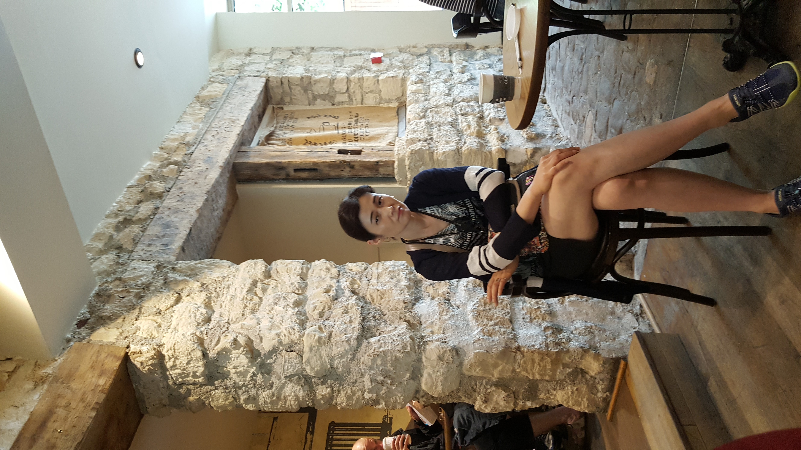

About Artist

"전통 민화의 상징과 색채, 그리고 도예의 온기를 현대 공간에 담아내는 작가"
유미정 작가는 한국 전통 민화의 상징성과 색채미, 그리고 도예의 조형미를 바탕으로 창작 활동을 이어가고 있습니다. 맹호도·감로도·문자도·연화도·일월오봉도 등 전통 민화의 정수를 깊이 있게 탐구하는 한편, 보자기·길상화 등 일상의 정서와 동서양의 융합을 현대적 감각으로 풀어내는 실험적 작업도 병행하고 있습니다.
한지에 분채와 봉채를 주재료로 전통의 맑은 발색을 구현하며, 도예 작업을 통해 흙의 온기와 전통 문양을 입체적으로 표현합니다. 복과 길상·조화·풍요의 의미를 민화와 도예 두 장르를 아우르며 현대 공간 속에 자연스럽게 전달하고자 합니다. 다수의 공모전 수상과 개인전·단체전·아트페어 참여를 통해 작품성을 인정받고 있습니다.
민화를 처음 만났을 때, 저는 그 안에 담긴 이야기에 매료되었습니다. 꽃 한 송이, 새 한 마리에도 깊은 의미와 염원이 담겨 있다는 사실이 민화를 단순한 그림 이상의 존재로 느끼게 해주었습니다.
저는 민화가 지닌 상징과 색채의 아름다움을 현대 공간 속에서도 살아 숨 쉬게 하고 싶습니다. 전통을 그대로 재현하는 것에 머물지 않고, 오늘을 사는 우리의 시선으로 전통 민화를 재해석하여 새로운 생명력을 불어넣는 것이 저의 작업 방향입니다.
도예는 그 연장선에서 자연스럽게 이어진 작업입니다. 흙을 빚고 불에 담그는 과정에서 전통 문양과 색채가 입체의 형태로 되살아납니다. 민화의 평면과 도예의 입체가 함께 어우러질 때, 전통은 더욱 풍성한 언어로 오늘과 대화할 수 있습니다.
오방색의 화려함과 여백의 고요함이 공존하는 민화처럼, 제 작품이 보는 이에게 복과 기쁨, 그리고 잠시의 평온을 전할 수 있기를 바랍니다.